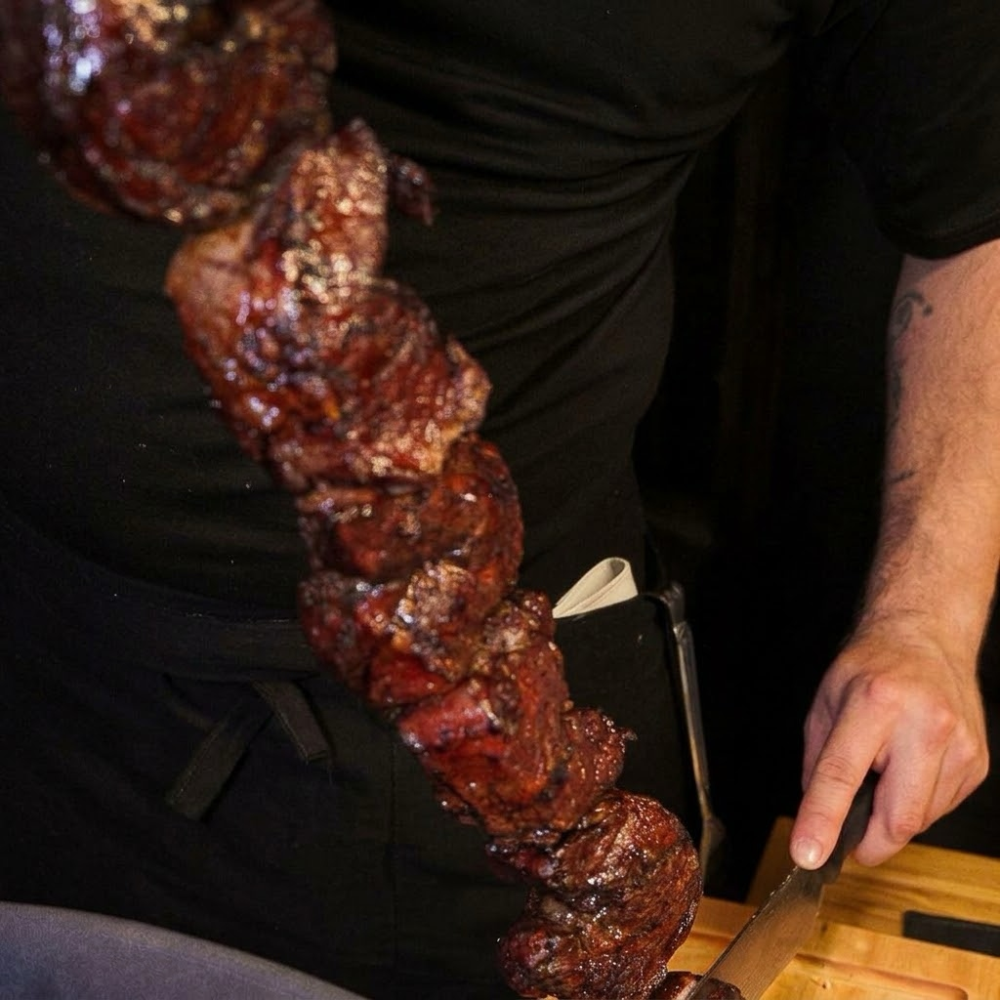
Espada I de VII · Corte Insignia
Picaña
El corte emblema, con su clásico manto de grasa dorada, trinchada al plato en la mesa.
Espeto Corrido · City Bell
El fuego ya está encendido. Siete cortes de carnes seleccionadas llegan a tu mesa, uno por uno, servidos directamente desde cada espada.
Nuestro espeto corrido es una ceremonia sin prisa alrededor del fuego. Desde el primer bocado recién salido de las brasas hasta el último corte trinchado al hilo sobre tu plato, cada momento sigue tu propio ritmo.
La bienvenida tiene el sabor de una empanada de carne artesanal cortada a cuchillo y selección de achuras y embutidos a las brasas.
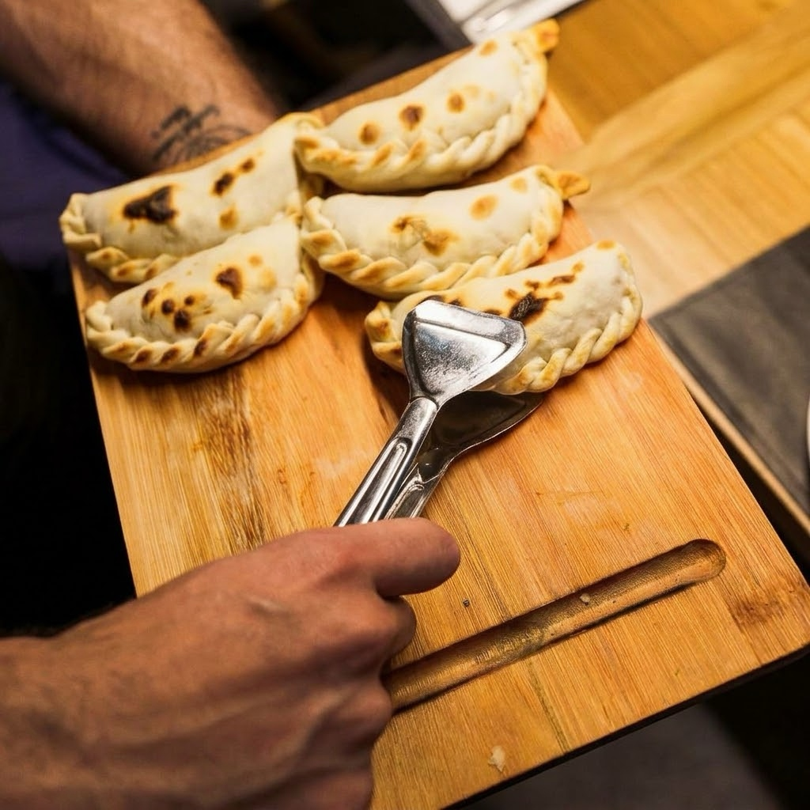
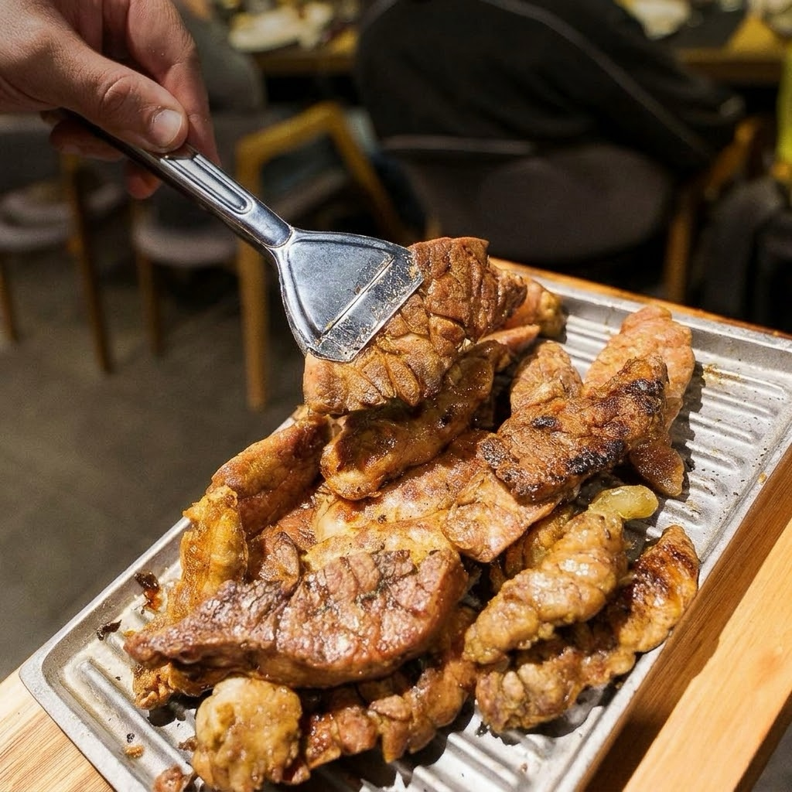
Ensaladas, vegetales asados, quesos y fiambres para elegir y combinar a tu gusto, todas las veces que quieras.
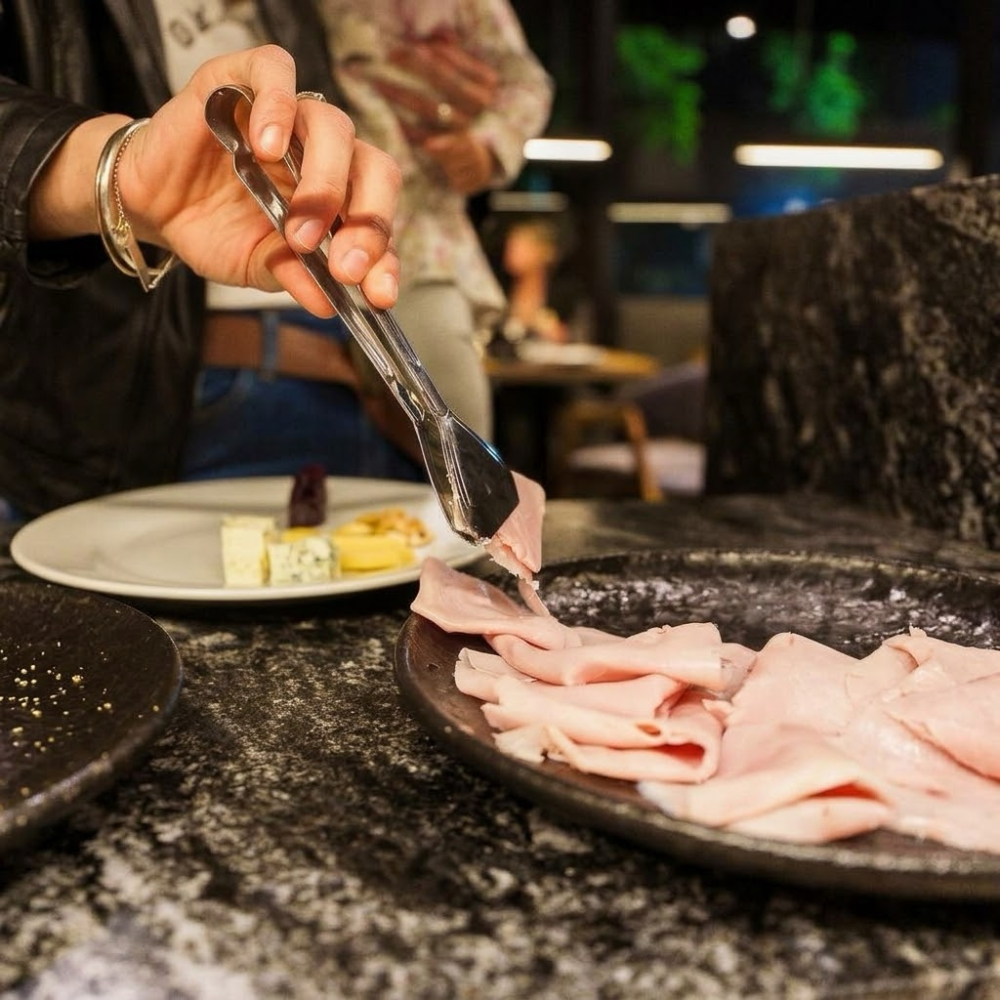
Siete espadas con cortes seleccionados y bandejas con achuras y embutidos van pasando durante el servicio. Cada vuelta trae algo distinto para ofrecerte. Vos elegís qué probar, qué repetir y cuándo volver al salad bar. El ritmo lo pone tu mesa.
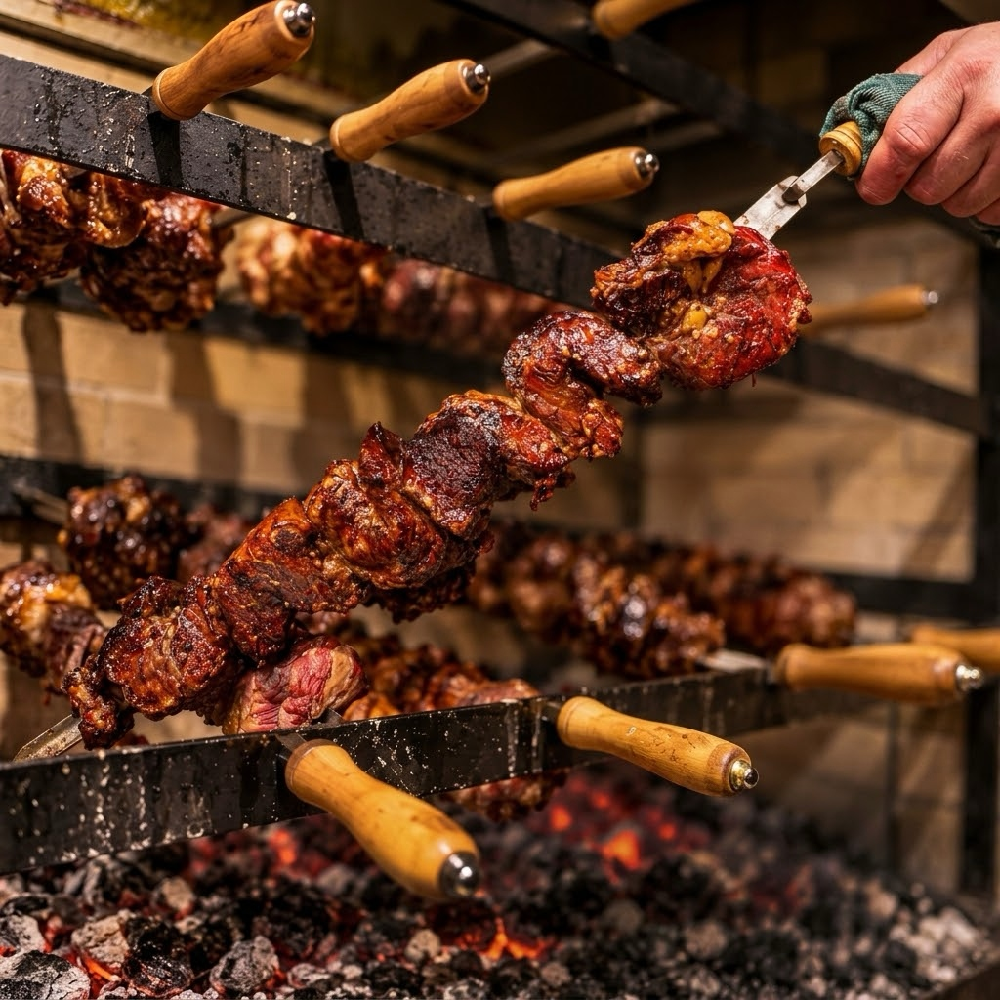
Postre de autor o café a elección para coronar el encuentro.
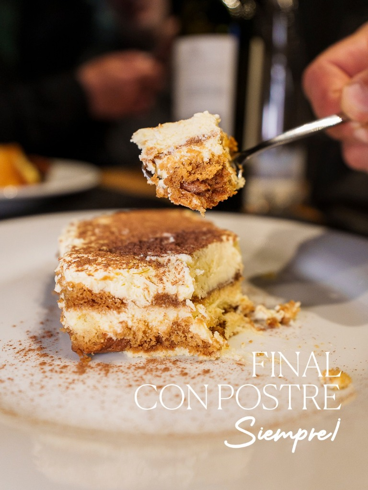
Siete cortes de carnes seleccionadas llegan a tu mesa, uno por uno, servidos directamente desde cada espada.
Opcional: Reemplazar las 7 espadas por un plato de nuestra cocina.

El corte emblema, con su clásico manto de grasa dorada, trinchada al plato en la mesa.
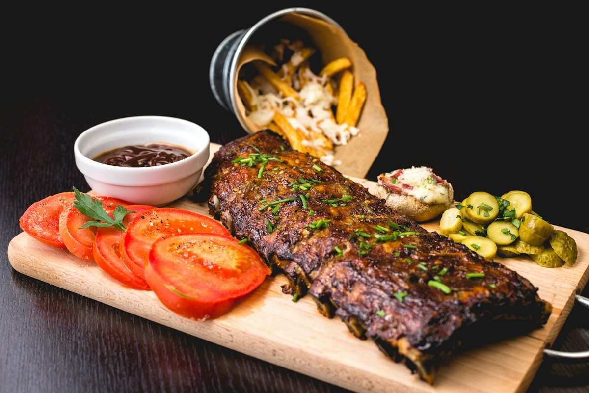
Asado pacientemente a fuego lento hasta desprenderse del hueso.
Piezas marinadas, doradas y crocantes por fuera, jugosas por dentro.
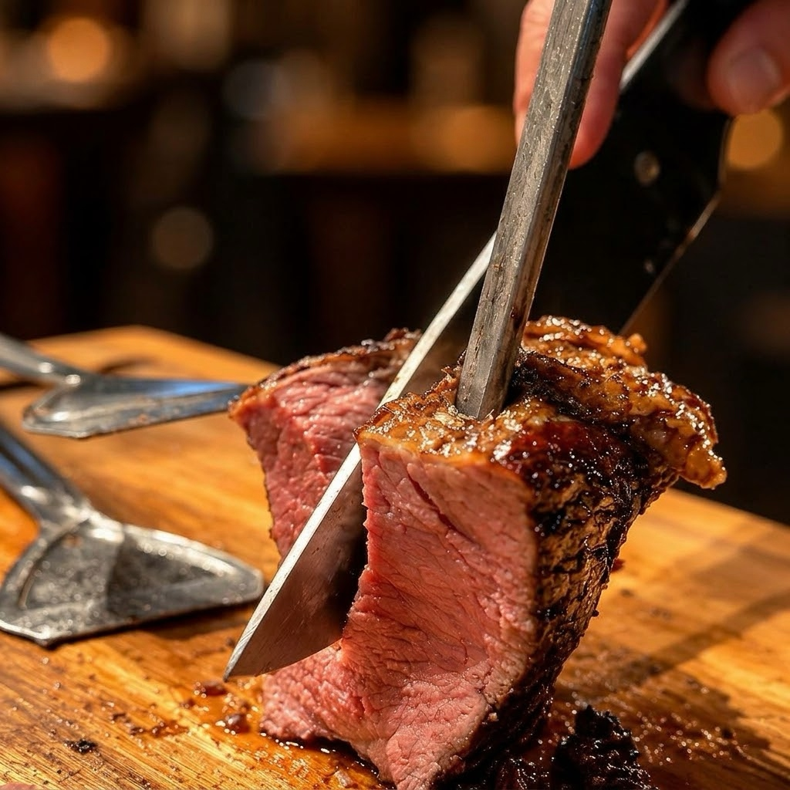
Sellado a fuego vivo con centro tierno y jugoso.
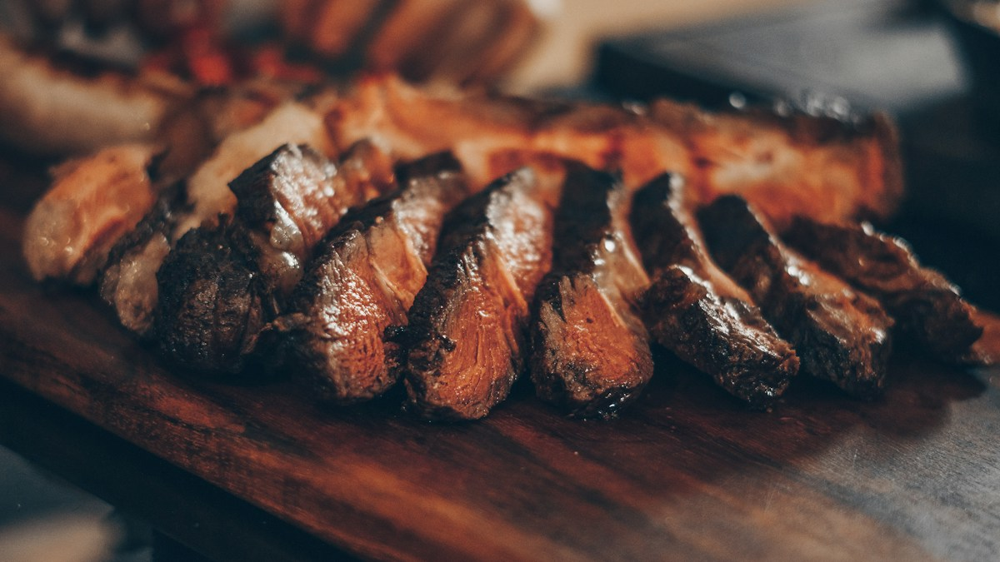
Servido al punto exacto que elija cada mesa.
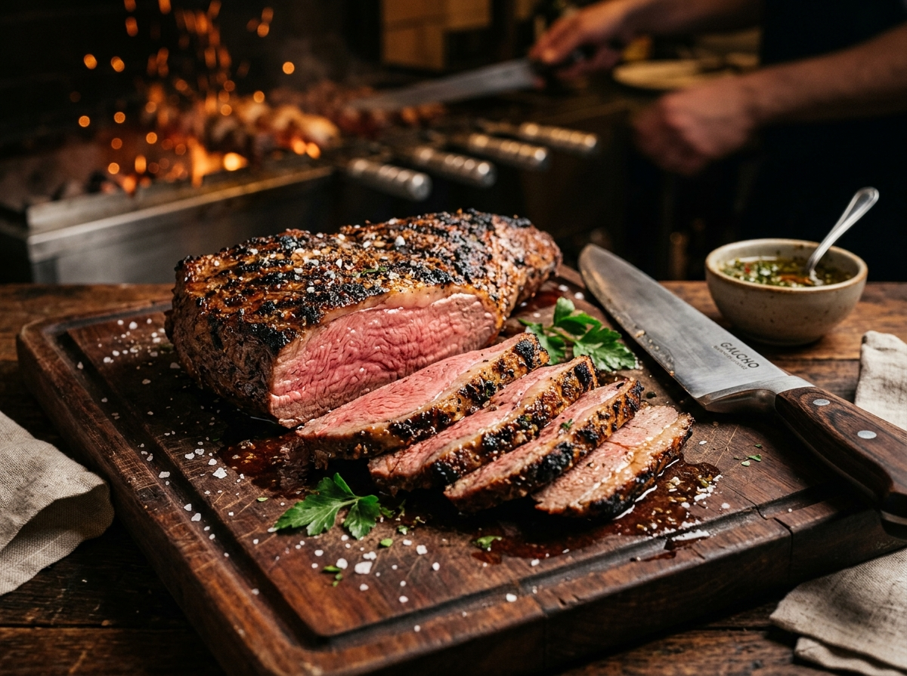
Cocción pareja, centro rosado y tierno, y una costra especiada sellada al calor de las brasas.
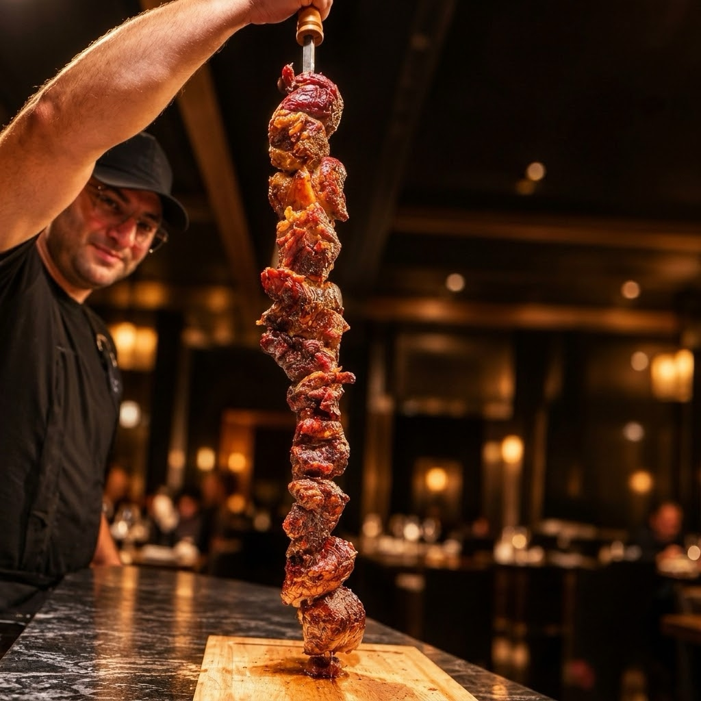
Braseada y caramelizada al calor de las brasas.
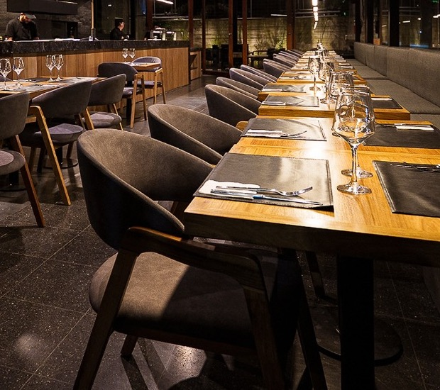
Madera cálida, fuegos encendidos y mesas amplias para compartir sin prisa alrededor del ritual.
Las 7 espadas, cocina & postres de autor.
Elegí fecha, turno y cantidad de comensales. Confirmamos tu lugar de forma directa e inmediata por WhatsApp.